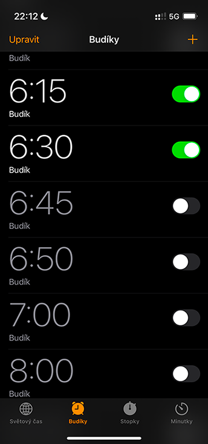
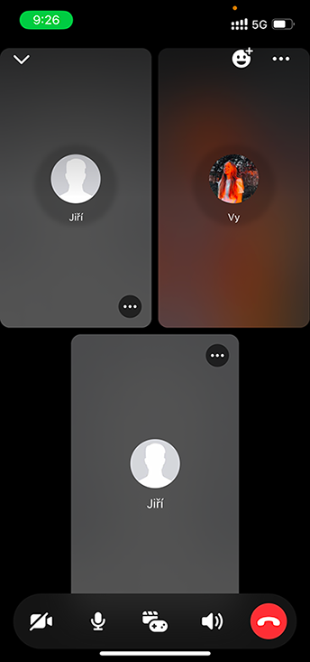
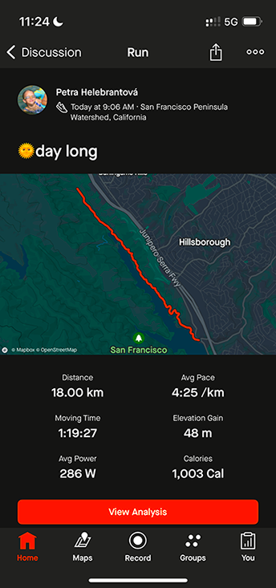
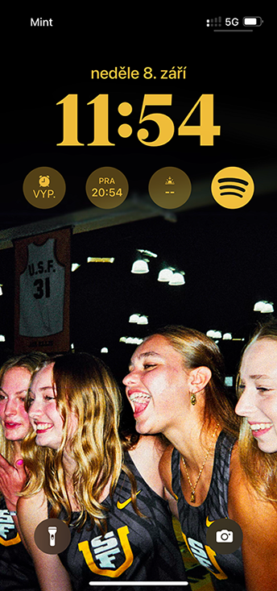
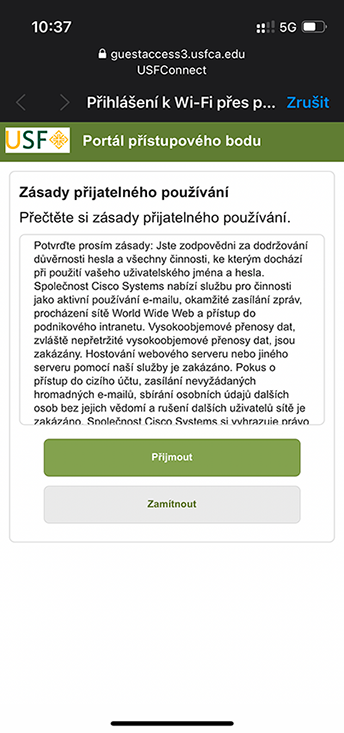
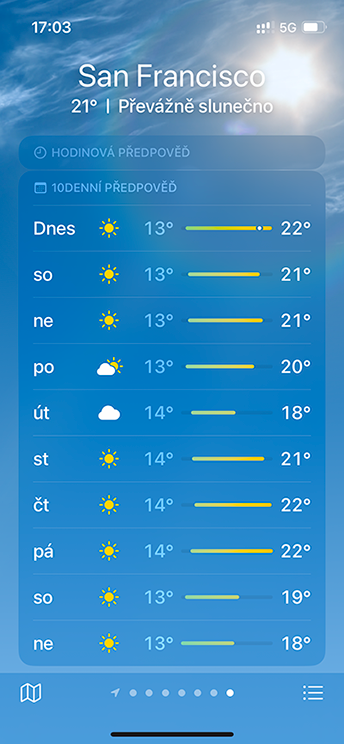

I'm setting my alarms for Friday morning. My team and I have practice at Crissy Field. Yayyy!
Welcome to The Feed!
On this website, you can take a look at one week in the digital life of an international student-athlete at the University of San Francisco.

After a workout, I usually look in the Garmin app to see how fast I ran each split.

Me calling with my parents. My mom uses my dad's other Facebook account, so I never know who picked up until I hear the voice:)

On September 8, the team and I went to Sawyer Camp for a Sunday long run.

Though I wear a watch, I still use my cell phone to check the time.
My Daily Canvas Check-In: What’s Next on My School To-Do List?
As a design major, I spend way too much time on Pinterest.
Here I am listening to one of my most favorite podcasts.

Sometimes, logging on to the school wifi is a real struggle.
This is my favorite stretching video; I already know it by heart.
I'm googling shortcuts all the time because I can't remember anything.

I love the fall weather in SF!